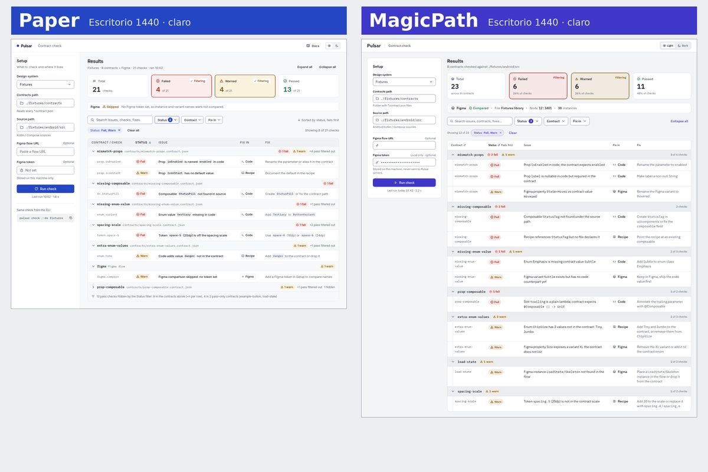

Bain · web
Sistema de diseño + 2 pantallas
Partió del código y el Figma de su sistema de diseño
Aprobada a medias
Partió del código y el Figma de su sistema de diseño
Aprobada a medias
Partió del código y el Figma de su sistema de diseño
Aprobada a medias
Partió de un concepto y una web sin diseño
En cada prueba, MagicPath y Paper trabajaron por separado.
Punto de partida: en Bain y Volaris, el código del sistema de diseño y Figma; en Pulsar, un concepto, sin sistema de diseño. Desde ahí, MagicPath y Paper construyen cada una por su cuenta, manejadas por un agente que orquesta el trabajo. Cada resultado pasa por una revisión automatizada de Sentinel y una pasada más manual de Adonay. Resultado: sistema de diseño y pantallas. Ninguna herramienta recibió el trabajo de la otra.


Donde Figma y el sistema de diseño no coincidían, ganó el sistema de diseño.
De izquierda a derecha: Figma · MagicPath · Paper
La tarjeta Flex con sus dos opciones elegidas.
Lo que cambia frente a Figma es casi todo a propósito. Según el contexto, gana el código o gana Figma; hoy, por esa brecha, una persona hace el pulido final.

MagicPath 0 de 3 archivos se actualizaron.
Paper El otro archivo no cambió ni un píxel.
Recomendación: una herramienta intermedia, como Storybook, entre diseño y código. Protege el código y da a los dos equipos una vista del código y sus librerías para revisarlas y mantenerlas.
El componente vive en una librería. Lo arrastras a otro archivo y se crea una copia fija, sin vínculo con el original. Si cambias la librería, tu archivo no cambia: ni solo, ni con Refresh, y no hay opción para actualizar. Para recibir el cambio hay que volver a arrastrar el componente.